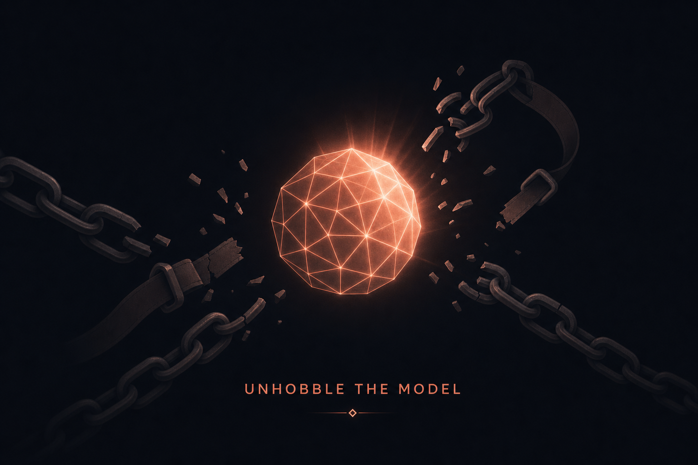
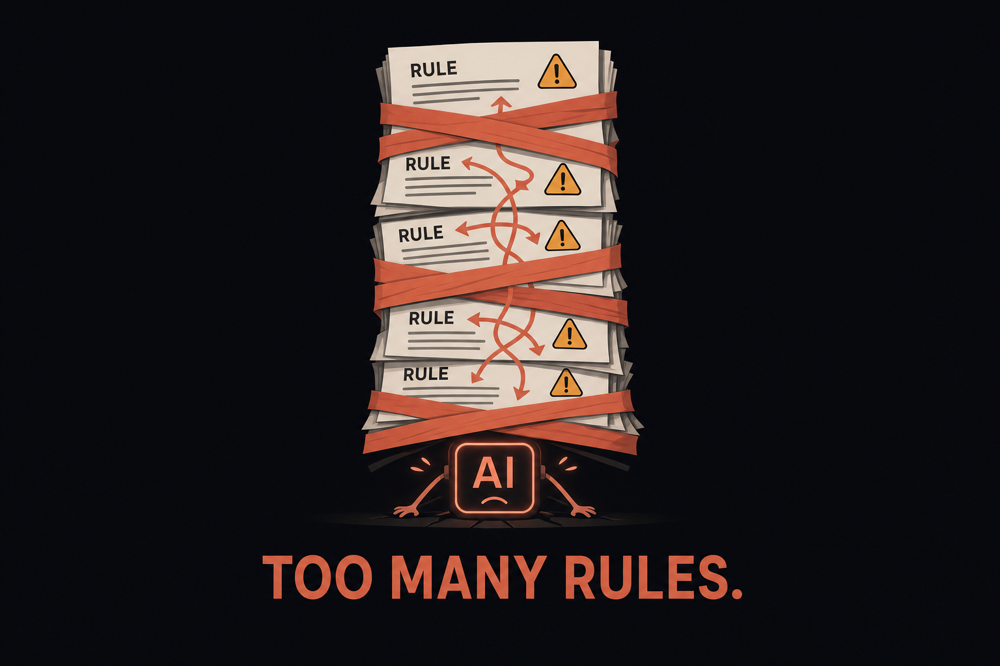
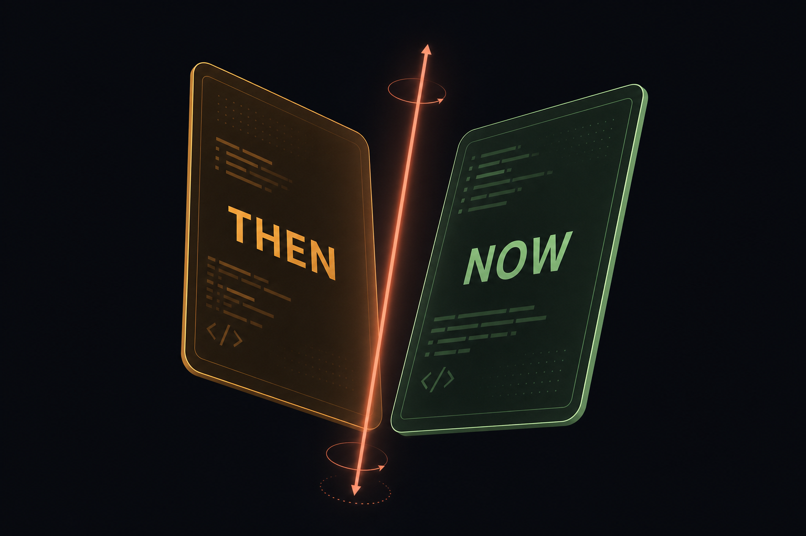
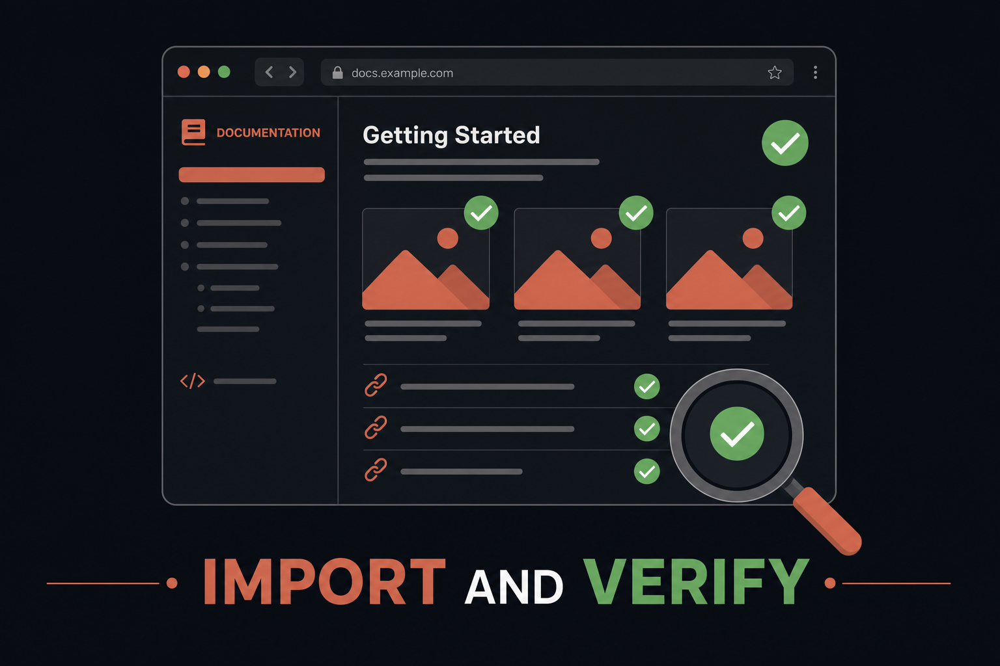
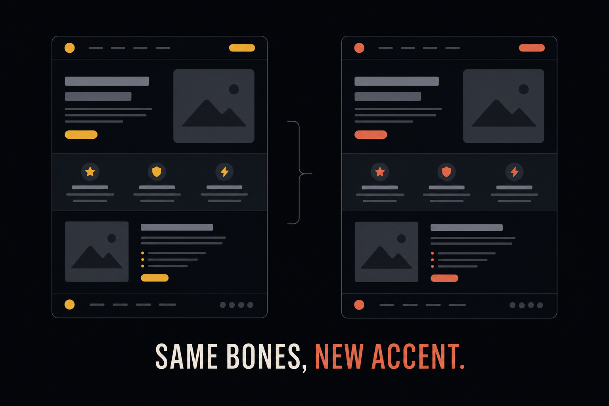

Plan: Opus 5 Mastery — Standalone HTML Guide

Purpose
Build a single self-contained standalone HTML guide — working title “Opus 5 Mastery — Unhobble the Model” — that teaches engineers how to get the best out of Claude Opus 5, then import it into the oh-my-html-docs site as a browsable, searchable document. The guide remixes the structural “heart” of the cmux orchestration guide (learning-cmux-with-agents/guide/index.html) — problem→solution flip cards, a tiered copy-paste prompt library with copy buttons, one memorizable mental model, honest comparison tables, and a strict single-accent dark identity — around the content of two Anthropic references: the Prompting Claude Opus 5 platform guide and the New Rules of Context Engineering for Claude 5 Generation Models blog post. Every lesson ships as a prompt the reader can copy into a live claude session and see for themselves.
Problem
Engineers carry Claude-4-era prompting habits into Opus 5, where they actively hurt: system prompts and CLAUDE.md files stuffed with guardrails force the model to burn tokens resolving contradictions (Anthropic deleted over 80% of Claude Code’s system prompt for Claude 5 models with no measurable performance loss); explicit “verify your work” and “double-check” scaffolding compounds with Opus 5’s built-in self-verification and wastes tokens; verbosity, narration, deliverable length, scope creep, and eager subagent spawning all have known prompt-level fixes that most users have never seen. The guidance exists, but it is spread across a platform doc and a blog post, is not interactive, and gives readers nothing to paste and feel. Meanwhile the best teaching format we have — the cmux guide’s tiered, copy-button prompt library — is locked to a different topic.

Solution
Author a new standalone bundle (index.html + generated images/) with the cmux guide’s DNA and its own coral/clay-on-dark identity: a hero stating the unhobbling thesis; three Problem→Solution flip rows; a mental model of the context stack (System prompt → CLAUDE.md → Skills → References) built on progressive disclosure; the blog’s five paradigm shifts as interactive Then → Now flip cards; an API/harness “levers” section (effort, thinking-on-by-default, 1M context, subagent caps); and the centerpiece — a 4-tier library of ~18 copy-paste prompts, several structured as run-it-twice A/B experiments, each with a copy button. Close with a “One Rule” manifesto section and an honest Opus-4.8-habits vs Opus-5 comparison matrix with a “migration tax” callout. Then import the bundle via just add, generating the library card, and validate rendering end-to-end with playwright-cli per the repo’s CLAUDE.md recipe.

Relevant Files
Existing Files
- existing
/Users/bossjones/dev/disler-aka-indydevdan/learning-cmux-with-agents/guide/index.html— the source being remixed: component CSS (topbar, toc, flow/flip, prow/copy-btn, matrix, print rules) and the copy/flip JS are ported and re-skinned from here. - existing
scripts/new_doc.py— the importerjust addwraps; copies the staging bundle verbatim intodocs/pages/<slug>/and generates the card. - existing
justfile—just add / lint / build / previewrecipes used in the build and validation phases. - existing
mkdocs.yml—absolute_links: relative_to_docsmakes the card’s root-absolutehtml:link subpath-safe for GitHub Pages. - existing
docs/pages/cmux-guide/+docs/library/guides/cmux-guide.md— precedent import; the new card mirrors this front-matter shape. - existing
CLAUDE.md— the playwright-cli validation recipe (imagesnaturalWidth > 0, console clean, card button resolves) executed verbatim in Phase 6. - existing
~/.claude/plugins/cache/boss-skills/agent-harness/0.28.0/skills/planf3/scripts/generate_gpt_image.py(andedit_gpt_image.py) — OpenAI image generation; needsOPENAI_API_KEYfrom.envrc(verified present viadirenv exec .).
New Files
- new
<scratchpad>/opus-5-mastery/index.html— the guide itself, authored in the session scratchpad staging dir; self-contained CSS/JS, sibling identity to the cmux guide (coral#D97757accent on#0A0C10dark). - new
<scratchpad>/opus-5-mastery/images/— 6–8 generated figures (hero, per-section) +favicon.svg; wide 1536×1024, identity-matched, <10 words each. - new
docs/pages/opus-5-mastery/— verbatim bundle created byjust add; becomes the canonical stored copy after import. - new
docs/library/guides/opus-5-mastery.md— generated card (front matter: title, description, tagsclaude,opus-5,prompting,context-engineering, categoryguides, html link, source URLs, added date). - new
specs/prompting-opus-5-guide.html— this plan. - new
specs/prompting-opus-5-guide/*.png— this plan’s embedded images.
Implementation Phases
IMPORTANT: Execute every phase and task step by step, in order, top to bottom.
Status markers: [] idle · [wip] in progress · [x] complete · [f] failed. All start as []; the Build Plan workflow updates them as it works.
[x] Phase 1: Scaffold & Visual Identity
Create the staging bundle and the guide’s design system: same structural DNA as the cmux guide, new coral/clay skin. The result is an empty-but-styled shell every later phase drops content into.
1.1 Staging & skeleton
[x]Create<scratchpad>/opus-5-mastery/withindex.htmlandimages/; add an<html lang="en">skeleton with title “Opus 5 Mastery — Unhobble the Model”, viewport meta, Google Fonts links (Space Grotesk / Inter / JetBrains Mono — same stack as the cmux guide).[x]Createimages/favicon.svg— a minimal coral glyph (e.g. an unlatched shackle or “O5” monogram) and wire the icon links.
1.2 Port & re-skin the component CSS
[x]Copy the cmux guide’s:root+ component CSS and re-skin:--accent:#D97757(coral/clay),--accent-2:#E0B357(amber for “Then”/warnings), keep#4FE3A3green for revealed “Now”/answers; keep dark surface family (#0A0C10…#161B22).[x]Port components used by later phases:.topbar,.hero,.toc,section/.sec-head,.flow*/.flip*(flip cards),.callout,.pquote,.tbl-wrap/.matrix,.code,.tiergroup/.prow/.copy-btn/.ptext,.check, footer, and the full@media printblock.[x]Drop components the new guide doesn’t need (agent-panes, metastrip) — no dead CSS.
1.3 Testing Strategy
Static render check of the empty shell in a real browser via playwright-cli against a local static server; confirms fonts, palette, and print CSS parse before content lands.
[x]python3 -m http.server -d <scratchpad>/opus-5-mastery 8010 &thenplaywright-cli open http://localhost:8010/+screenshot— shell renders, no console errors, coral accent visible.
[x] Phase 2: Core Sections (Hero, §00–§03)
Author the guide’s teaching spine from the two Anthropic sources (verbatim snippets are preserved in this plan’s Notes — no re-fetch needed).

2.1 Hero + TOC
[x]Hero: headline “Unhobble the Model”, three bullets (JUDGMENT / LEVERS / PROMPTS), the 80%-deletion stat as the lede, hero image slot.[x]Sticky topbar + 7-entry TOC (#s0…#s6) mirroring the cmux TOC component.
2.2 §00 Problem & Solution — three flip rows
[x]Row 1: “Your Claude-4 prompt is fighting the model” → reveal: delete constraints; conflicting rules burn tokens resolving contradictions (front question: “Can prompting fix this?”).[x]Row 2: “Responses and written files run long” → reveal: explicit length/narration calibration (effort controls thinking, not verbosity — prompt for length explicitly).[x]Row 3: “Verification & delegation scaffolding compounds” → reveal: remove legacy verify steps; cap subagent spawning; chips point at library prompt numbers.
2.3 §01 The Mental Model — the context stack
[x]Figure + table: System prompt (product context) → CLAUDE.md (repo gotchas only, lightweight) → Skills (progressive disclosure, team opinions) → References (@-mention code/mockups — code beats descriptions).[x]“Memorize this” callout: put guidance at the shallowest layer that still loads it only when needed; mention/doctorfor right-sizing.
2.4 §02 Then → Now — five paradigm-shift flip cards
[x]Five flip rows, amber “THEN” front → green “NOW” back: rules→judgment · examples→interface design · upfront→progressive disclosure · repeat-yourself→tool descriptions only · CLAUDE.md-memory→auto-memory. Each back face carries the blog’s concrete example (e.g. thepending | in_progress | completedenum).
2.5 §03 The Levers — API & harness section
[x]Effort table (low/medium = primary cost lever where quality holds; default high; xhigh for hardest agentic/coding work; re-run effort sweeps when migrating).[x]Thinking: on by default; disabling capped at effort ≤ high; thinking-on at low effort beats thinking-off at similar cost; the two thinking-disabled artifacts (tool-calls-as-text, internal XML tags) + the combined mitigation instruction as an annotated code block.[x]1M-token context (default and max, consistent behavior throughout) + subagent-cap guidance card.
2.6 Testing Strategy
Content-accuracy pass against the source extracts in Notes, plus live render/interaction check of the flip rows.
[x]Cross-check every §00–§03 claim against the Notes extracts — no invented behaviors, quotes verbatim where quoted.[x]playwright-cli open … ; eval "document.querySelector('.flip-front').click()"— flip animates, front hides, green back face shows; reset button restores.
[x] Phase 3: §04 The Prompt Library (the centerpiece)
~18 pasteable prompts in 4 tiers, each a .prow with a data-prompt copy button and auto-rendered .ptext. Verbatim Anthropic instruction blocks are used where they exist; the rest are authored to be runnable in a live claude session. A/B “run it twice” experiments are starred like the cmux guide’s ★ prompts.

3.1 Tier 1 · Response Shaping (4 prompts)
[x]01 Conciseness instruction (verbatim platform snippet) · 02<tone_preference>end-of-prompt reminder · 03 Narration cadence — tune down (verbatim) and a tune-up variant · 04 Written-deliverable length calibration (verbatim).
3.2 Tier 2 · Scope & Trust (4 prompts)
[x]05 Scope-constraint instruction (verbatim) · 06 ★ A/B: run a task with your old “verify everything” boilerplate, then bare — compare tokens/steps · 07 Self-correction narration control (verbatim) · 08 “Say so in a sentence and continue” disagreement handling.
3.3 Tier 3 · Agentic & Review (5 prompts)
[x]09 Subagent-spawning cap (verbatim) · 10 ★ Code-review A/B: “only high-severity” vs “report everything, filter in a second pass” · 11 Full-spec-up-front long-horizon feature prompt (complete task spec, then leave it to run) · 12 Effort sweep A/B on one task · 13 Vision: “analyze, crop, and visually verify with tools” pattern.
3.4 Tier 4 · Context Engineering (5 prompts)
[x]14 ★ “Audit my CLAUDE.md — delete every rule Opus 5 no longer needs; justify each deletion” · 15 Convert a CLAUDE.md guidance block into a progressive-disclosure skill · 16/doctorright-sizing walkthrough · 17 Interface-design-over-examples tool-description rewrite · 18 ★ Before/after unhobbling A/B on a real repo prompt.
3.5 Testing Strategy
Every prompt must be literally pasteable: no placeholder tokens the reader must hand-edit unless explicitly marked (e.g. <your-repo>), and every copy button must copy exactly the rendered text.
[x]playwright-cli eval: for each.copy-btn, click and readnavigator.clipboard.readText()— copied text equalsdata-prompt; button flips to “Copied ✓”.[]Manual smoke: paste prompts 01, 06, 10, 14 into a liveclaudesession and confirm they run sensibly as written. (Left for the user — the copy mechanics are playwright-verified, but a real-session run is the honest test.)
[x] Phase 4: §05 One Rule, §06 Matrix, Interactions & Footer
Close the argument and wire the JS.
4.1 §05 The One Rule
[x]Manifesto section (analog of cmux “Agentic Access”): pull quote “Delete constraints. Rely on context and model judgment.”, the 80% stat, and a two-bullet definition/stakes pair.
4.2 §06 Prompting Opus 4.8 vs Opus 5 — comparison matrix
[x]Matrix rows: verbosity control · verification instructions · self-correction · subagent use · review-prompt severity framing · effort defaults · thinking config · vision workarounds · context window · memory. Columns: “Opus 4.8-era habit” vs highlighted “Opus 5” column.[x]“Migration tax” honesty callout: what to remove from old prompts, and where old habits are actively harmful vs merely wasteful; note Opus 5 runs fine on 4.8 prompts out of the box — this is tuning, not rescue.
4.3 Interactions + footer
[x]Port the cmux script block:renderPrompt()light-markdown rendering into.ptext, copy-with-fallback, flip/reset handlers; print CSS shows answers not buttons.[x]Footer: closing line + links to both Anthropic sources.
4.4 Testing Strategy
Full-page interaction and print-fidelity pass.
[x]playwright-cli console— zero errors (favicon 404 exempt) after exercising every flip and copy button.[x]Print preview (headless PDF) — flip cards render answer-side, sections paginate per the print rules.
[x] Phase 5: Guide Images
Generate the guide’s figures with the planf3 OpenAI scripts, matching the coral-on-dark identity. Roughly one per section: hero, context-stack (§01), then/now (§02), levers (§03), tiers staircase (§04), one-rule (§05). Parallelize generation.
5.1 Generate & embed
[x]For each figure:direnv exec . uv run <planf3>/scripts/generate_gpt_image.py "<prompt>" images/<name>.png --size 1536x1024 --quality high— professional, minimal, one/two ideas, <10 words of text, coral#D97757on#0A0C10.[x]Embed each as<img src="images/<name>.png" alt="…">inside its section’s existing<figure>; write real alt text and figcaptions.[x]Off-identity results: fix withedit_gpt_image.pyrather than full regeneration where possible.
5.2 Testing Strategy
Image-load verification against the staging server.
[x]playwright-cli --raw eval "JSON.stringify([...document.images].map(i => ({file: i.currentSrc.split('/').pop(), ok: i.complete && i.naturalWidth > 0})))"— every imageok: true.
[x] Phase 6: Import into the Site & Validate End-to-End
Make the guide a first-class document of this site: verbatim bundle + card + search, validated with the repo’s own playwright recipe.

6.1 Import
[x]just add <scratchpad>/opus-5-mastery --title "Opus 5 Mastery — Unhobble the Model" --category guides --tags claude,opus-5,prompting,context-engineering→ createsdocs/pages/opus-5-mastery/+ card.[x]Card polish: description sentence,source:pointing at both Anthropic URLs; confirmhtml:link is root-absolute (mkdocs rewrites it).
6.2 Testing Strategy — the CLAUDE.md recipe + repo gates
The repo’s standard validation loop, plus lint/build gates.
[x]just lint— ruff + rumdl clean (card front-matter pattern respected).[x]just build— strict build passes, no warnings.[x]just search— Pagefind indexes the new card.[x]python3 -m http.server -d site 8000 &thenplaywright-cli open http://localhost:8000/pages/opus-5-mastery/index.html+screenshot— page title correct, layout intact.[x]Image check eval — allok: true;playwright-cli console— clean bar favicon.[x]playwright-cli goto http://localhost:8000/library/guides/opus-5-mastery/— “Open the document →” resolves to the verbatim doc; thenplaywright-cli close.
Validation Commands
Execute these commands to validate the entire plan is complete:
[x]just lint— python + markdown lint clean across the repo.[x]just build— strict MkDocs build succeeds with the new bundle + card.[x]just preview— site + Pagefind serve; searching “opus 5” surfaces the new card.[x]playwright-cli open http://localhost:8000/pages/opus-5-mastery/index.html— renders; all imagesnaturalWidth > 0; console clean (favicon exempt); every copy button copies; every flip card flips.[x]uv run pytest— importer tests still green.[x]grep -cE '\{\{[A-Z_]+' specs/prompting-opus-5-guide.htmlreturns0— no unfilled template tokens in this plan.
Questionables
Open questions, phrased yes/no where possible. Each carries the assumption the build will proceed on unless you say otherwise.
Q1 — Is the slug/title “opus-5-mastery” / “Opus 5 Mastery — Unhobble the Model” right? (yes/no)
Assumption: yes. Alternatives considered: “prompting-opus-5”, “opus-5-field-guide”. The slug is baked into docs/pages/<slug>/ and the card path, so cheap to change before Phase 6, annoying after.
Q2 — Is ~18 prompts across 4 tiers the right size? (yes/no)
Assumption: yes. The cmux guide carries 31; this guide’s sources support ~18 without padding. Quality over count — every prompt must teach one observable behavior. Say “no, more” and Tier 3/4 grow with harness-specific prompts (hooks, memory, workflows).
Q3 — After import, is docs/pages/opus-5-mastery/ the canonical copy (scratchpad staging discarded)? (yes/no)
Assumption: yes. The repo’s architecture stores the verbatim bundle in-tree, so future edits happen there directly. The alternative — keeping a separate sources/ dir — doubles maintenance for no gain.
Q4 — OK to include live external links to the two Anthropic sources in the footer/hero? (yes/no)
Assumption: yes. The page stays self-contained asset-wise (fonts are the one existing exception, matching the cmux guide); outbound links don’t affect rendering. just links/lychee will check them.
Q5 — Skip a light-theme variant for v1? (yes/no)
Assumption: yes (skip). The cmux guide is dark-only and the identity is designed dark-first. A light variant would double the CSS surface and the image set.
Q6 — Should §06 compare “Opus 4.8-era prompting habits vs Opus 5” (not Opus-vs-Sonnet-vs-Haiku model choice)? (yes/no)
Assumption: yes. The sources are about behavioral deltas and migration, which is also the honest analog of the cmux guide’s “vs tmux/Warp” section. A model-picker table is a different document.
Q7 — Generate a photographic fixed-background hero texture (like the cmux bg.webp), or keep a flat gradient? (yes = flat gradient)
Assumption: yes — flat gradient for v1. One fewer large binary, faster load, and the coral radial glow already gives depth. Easy to add later with one edit_gpt_image.py-generated texture.
Notes
Source extracts (builder: use these — no re-fetch required)
A. Prompting Claude Opus 5 (platform guide) — behavioral patterns and their verbatim fixes:
- Capabilities: strongest on hard agentic coding (full tasks, no stubs; give the complete spec up front and let it run); high-precision/high-recall code review (“only report high-severity” is followed literally — ask for everything, filter later); low/medium effort gives strong quality per token; vision best when it can iteratively analyze/crop/verify with tools; 1M context default+max with consistent behavior; coordinates subagent teams well (writer–verifier).
- Verbatim instruction blocks to reuse in the prompt library (Tier they land in noted):
[T1·01 conciseness] Keep responses focused, brief, and concise. Keep disclaimers and caveats
short, and spend most of the response on the main answer. When asked to explain something,
give a high-level summary unless an in-depth explanation is specifically requested.
[T1·02 end-of-prompt reminder] <tone_preference>Keep outputs reasonably concise.</tone_preference>
[T1·03 narration cadence] Before your first tool call, say in one sentence what you're about
to do. While working, give a brief update only when you find something important or change
direction. When you finish, lead with the outcome: your first sentence should answer "what
happened" or "what did you find," with supporting detail after it for readers who want it.
[T1·04 deliverable length] Match the length of written documents to what the task needs:
cover the substance, but do not pad with filler sections, redundant summaries, or boilerplate.
[T2·05 scope constraint] Deliver what was asked, at the scope intended. Make routine judgment
calls yourself, and check in only when different readings of the request would lead to
materially different work. If the request seems mistaken or a better approach exists, say so
in a sentence and continue with the task as asked rather than quietly narrowing, widening, or
transforming it. Finish the whole task, and stop short of actions that are clearly beyond
what was asked.
[T2·07 correction narration] Only correct an earlier statement when the error would change
the user's code, conclusions, or decisions. State corrections plainly and briefly, then
continue the task. For slips that change nothing for the user, make the fix and move on
without noting it.
[T3·09 subagent cap] Delegate to a subagent only for large tasks that are genuinely
independent and parallelizable, such as a wide multi-file investigation. Do not delegate work
you can finish yourself in a handful of tool calls, and do not use subagents to verify or
double-check your own work. If one subagent can complete the task, use one rather than
several, and keep spawn counts low.
[§03 thinking-disabled mitigation] When you use a tool, you may say a brief sentence first.
If no tool can express what the user asked for, say so instead of guessing. Do not include
internal or system XML tags in your response.- Key removals (fuel for §00 row 3 + §06 matrix): delete “include a final verification step”, “use a subagent to verify”, “double-check your answer” — Opus 5 self-verifies and self-corrects; these compound and waste tokens with no quality gain. Don’t name thinking tags when mitigating tag leakage (general form works better). Effort controls thinking volume, not visible response length — prompt for length explicitly.
B. The New Rules of Context Engineering (blog):
- Headline fact: Anthropic removed >80% of Claude Code’s system prompt for Claude 5 models with no measurable performance loss. Core idea: “unhobbling” — over-constraint (conflicting messages across system prompt / CLAUDE.md / request) forces token-burn on contradiction resolution; delete constraints, rely on surrounding context and judgment.
- Five shifts (§02 flip cards): (1) rules → judgment (comment-density example: “write code that reads like the surrounding code”); (2) examples → interface design (Todo status enum
pending | in_progress | completedsuggests behavior); (3) all-upfront → progressive disclosure (skills retrieved when needed; ToolSearch deferred loading); (4) repeat-yourself → instructions live only in tool descriptions; (5) manual CLAUDE.md memory → auto-memory. - Context assembly guidance (§01): system prompt = product context/mode; CLAUDE.md = lightweight, gotchas only, no restating the obvious; skills = team opinions with progressive disclosure, split long skills; references = @-mentions, code > descriptions (HTML mockups beat design prose). Tool:
/doctorright-sizes skills/CLAUDE.md.
Design decisions & rejected alternatives
- Rejected: reusing the cmux gold identity. User chose a sibling identity — coral/clay
#D97757(Anthropic-adjacent terracotta) on the same dark surface family, same type stack. Sections rhyme; the accent differentiates. - Rejected: prompts-only guide. User opted in to the §03 API/harness section — the effort/thinking levers are half the story of “using Opus 5 well.”
- Interaction semantics remix: the cmux “Can Cmux Solve This?” flip (amber question → green answer) becomes two things here: §00 problem rows (“Can prompting fix this?”) and §02 “THEN → NOW” paradigm flips. Same CSS machinery, two meanings.
- Dependencies: none added. Guide is dependency-free self-contained HTML (Google Fonts links only, matching cmux precedent); images via the planf3 PEP 723 scripts (
uv run,OPENAI_API_KEYfrom.envrcviadirenv exec .— key verified present; never echo it). - Self-referential bonus: the guide teaches the patterns this very repo’s CLAUDE.md uses (playwright validation loop, lightweight gotcha-focused docs) — Tier 4 prompt 14 can be demoed on this repo itself.
Guide section map (target ~700–900 lines, single file)
| # | Section | Component | Image |
|---|---|---|---|
| — | Hero: Unhobble the Model | hero + bullets + stat | hero.png |
| 00 | Problem & Solution | 3 flip rows | — |
| 01 | The Mental Model (context stack) | figure + table + callout | context-stack.png |
| 02 | Then → Now (5 shifts) | flip cards | then-now.png |
| 03 | The Levers (effort/thinking/1M/subagents) | table + code blocks | levers.png |
| 04 | The Prompt Library (~18, 4 tiers) | tiergroups + copy buttons | tiers.png |
| 05 | The One Rule | pull quote + manifesto | one-rule.png |
| 06 | Opus 4.8 habits vs Opus 5 | matrix + migration-tax callout | — |

Amendments
2026-07-27T14:15:38Z — Guide built, playwright-reviewed, and imported
Executed the full plan in one build round: authored the standalone guide (hero, 3 problem→solution flip rows, context-stack model, 5 Then→Now flip cards, levers section, 18-prompt copy-button library, One Rule, migration matrix) in scratchpad staging; reused 4 spec images and generated levers.png + one-rule.png; playwright-cli review verified all 6 images load, all 18 copy buttons copy exactly their data-prompt (clipboard-read asserted), all 8 flip cards flip/reset, console clean, and print CSS renders answer-side in PDF. One UI/UX fix from the review: on mobile the flow-arrow cell rotated 90° as a whole element and overlapped the problem text — now only the glyph rotates when flipped. Imported via scripts/new_doc.py (the just add recipe drops quoting on multi-word titles — worth a justfile fix) as docs/pages/opus-5-mastery/ + docs/library/guides/opus-5-mastery.md; just lint, strict just build, Pagefind index, and pytest all green; grep -ci cmux on the guide returns 0 (subject isolation). Remaining open item: the live-session manual smoke of prompts 01/06/10/14.